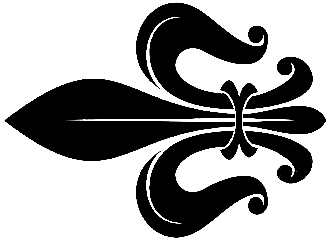

Conspiratio
 Ankündigungen 
Newsarchiv
Werte Spieler,
frohe Weihnachten! Wie schon in Discord angekündigt habe ich einen Großteil des Dezembers krank verbracht, so dass ich in meiner freien Zeit nicht wie geplant an Conspiratio arbeiten konnte, sondern mich erholen musste. Daher wieder nur ein kleines Update: Conspiratio 1.4.7
Hier findet ihr Details zu den Änderungen: Changelog
Eine erste Version des neuen Godot Client verschiebt sich auf Anfang nächsten Jahres Unterstützung in allen Bereichen wird weiterhin gesucht. Beteiligt euch gerne an den neuen Umfragen, diese findet ihr im Forum und in Discord und laufen 30 bzw. 14 Tage lang.
Feedback, Wünsche oder Anregungen gerne über Discord oder im Forum.
Viel Spaß, schöne Feiertage und einen guten Rutsch,
Euer Sir Toby und das Conspiratio Team
24.12.2024
Werte Spieler,
frohe Weihnachten! Wie schon in Discord angekündigt habe ich einen Großteil des Dezembers krank verbracht, so dass ich in meiner freien Zeit nicht wie geplant an Conspiratio arbeiten konnte, sondern mich erholen musste. Daher wieder nur ein kleines Update: Conspiratio 1.4.7
Hier findet ihr Details zu den Änderungen: Changelog
Eine erste Version des neuen Godot Client verschiebt sich auf Anfang nächsten Jahres Unterstützung in allen Bereichen wird weiterhin gesucht. Beteiligt euch gerne an den neuen Umfragen, diese findet ihr im Forum und in Discord und laufen 30 bzw. 14 Tage lang.
Feedback, Wünsche oder Anregungen gerne über Discord oder im Forum.
Viel Spaß, schöne Feiertage und einen guten Rutsch,
Euer Sir Toby und das Conspiratio Team